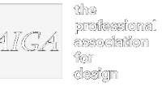
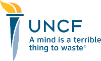

I think more organizations need to shift from chasing attention to earning a real place in people’s lives. That’s what I mean by Experience-Led Growth: creating business value by becoming more useful, more relevant, and more worth returning to over time.
People don’t make decisions based on brand messaging alone. They’re checking Reddit, group chats, reviews, creators, and LLMs that don’t agree. You have less control over how people form opinions and decide what’s worth choosing.
Reach can get you seen. It doesn’t guarantee relevance. Experience-Led Growth is about building enough value that people return because they want to.
What people want from a product or service now moves across categories faster than most organizations are built to respond to. What feels novel quickly becomes baseline.
People are more aware of what they’re giving up now: their data, time, attention, and trust. If you’re asking for any of those things, the value in return has to be obvious in the experience itself.
A 6-week sprint for teams that need a sharper point of view on how their product, service, or experience should evolve.
This is for organizations at an inflection point: when customer expectations are changing, engagement has flattened, the market is shifting, or new technology is creating pressure to respond. The issue usually isn’t a lack of ideas. It’s that the real opportunity is still blurry, or the current experience no longer matches the value the organization wants to create.
The sprint helps you step back, see the experience more clearly, and make better decisions about where growth, relevance, and differentiation can come from next. Together, we look at customer behavior, business priorities, category movement, and the role technology should or shouldn’t play.
This is a good fit if:
What comes out of it: A clearer opportunity space, a stronger strategic direction, and a concrete set of concepts, priorities, or prototypes to help your team move forward.
Tailored based on your product maturity and project scope
Ecosystem Audit & Touchpoint Journey Maps. Mapping the full experience and opportunity across Customer, Company, Category, and Context to pinpoint where value is breaking or falling short.
Consumer Mindset & Stakeholder Discovery. Targeted interviews and synthesis that surface what your users actually need, care about, and expect.
Directional Concepts & Interactive Prototypes. Visual concepts, swipes, and prototypes that bring fresh experience ideas and digital utility to life.
Experience-Led Growth Strategy & Prioritized Roadmap. A clear North Star vision and actionable strategic framework aligning product, growth, and leadership teams on what to build and test next.
Weeks 1 to 2: Discovery. Stakeholder & consumer discovery, 4Cs ecosystem audit & journey mapping.
Weeks 3 to 4: Analysis. CX gap analysis & white space identification.
Week 5: Concepting. Directional prototyping & visual concepting.
Week 6: Roadmap. Experience-led growth strategy & prioritized roadmap readout.
A focused session for leaders working through a product, customer experience, growth, or AI-related decision.
Sometimes you don’t need a full sprint. You need a clear outside perspective, a thoughtful working session, and enough room to think through a problem without rushing to the wrong answer.
These sessions are for leaders who want to pressure-test a direction, work through friction in an existing experience, evaluate a product or GTM shift, or make sense of how changing technology and customer behavior should shape their next move.
In 60 minutes, we’ll get to the heart of the issue, identify what matters most, and map out a practical next step.
What you get: A 60-minute live working session and a concise recommendation memo with key observations, priorities, and next steps.
Book a Session →A few examples of what this looks like in practice, from rethinking customer value to shaping products, experiences, and AI-enabled services.
Rethinking how a banking app could create more value towards customers financial goals between transactions, without relying on dark patterns.
"Ariba was an incredible partner as our teams collaborated and co-created on a strategy for deepening customer relationships within the Ally app. She helped us think in terms of how to bring real customer value in a space that is often purely transactional, delivering exciting concepts my team could pick up and run with."
Exploring how an iconic brand could evolve beyond legacy expectations into a more adaptive, everyday digital experience.
"Ariba's superpower is her curiosity and ability to connect emerging technologies with creative opportunities. She excels at understanding how new technologies can be applied in meaningful, innovative ways to create better customer and business outcomes."
Working from enterprise user research through product strategy, positioning, GTM and prototype development for a new AI-native research platform.
"I worked with Ariba on an enterprise AI SaaS platform for researchers and creatives, from research through product strategy, user testing, and go-to-market. She could sit with potential customers, pull out what they actually needed, and turn it into a product direction. Customers, engineers, and executives all trusted her judgment."
Exploring how generative AI could support creator-led commerce in a way that felt intuitive, useful, and native to the shopping experience.
Working directly with communities to shape the digital experience for a $65M national mental health campaign to feel relevant, safe, and valuable.
"Ariba is passionate about solving problems and pain points by co-creating with people who are the most impacted. She is expert at applying design thinking and lean startup practices to a variety of projects and challenges, and is an empathetic listener able to distill insights and present to senior leadership with confidence."
Creating the internal strategy, partnerships, and governance needed to explore new technologies without losing sight of trust, cost, or usefulness.
"When tasked with leading transformation of our donated media model at the Ad Council, I turned to Ariba to co-create and reimagine the possibilities of such an ambitious exploration. Her curiosity, strategic thinking, and ability to start with a blank canvas paved new paths of opportunity across the organization, up through the C-suite."
If you’re thinking through a product, CX, AI, or growth question, let’s chat